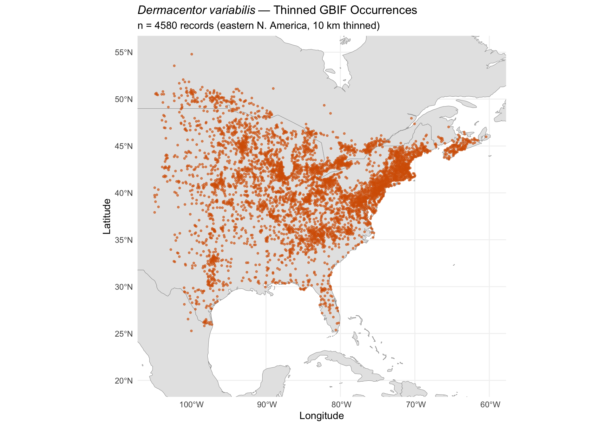

library(tidyverse)
library(terra)
library(sf)
library(rnaturalearth)
library(rnaturalearthdata)
library(CoordinateCleaner)
library(spThin)Step 1: Occurrence Data Preparation
Dermacentor variabilis Species Distribution Model
Overview
This script prepares occurrence data for Dermacentor variabilis (American dog tick) from a GBIF download (22,668 records). Key steps:
- Load and filter raw GBIF occurrence records
- Taxonomic filtering: restrict to eastern N. America (true D. variabilis sensu stricto, excluding western populations now classified as D. similis per Lado et al. 2021)
- Coordinate cleaning using
CoordinateCleaner - Spatial thinning at 10 km to reduce sampling bias
- Map and summarise final occurrence dataset
1. Project paths
base_dir <- "~/Library/CloudStorage/OneDrive-CSIRO/OneDrive - Docs/01_Projects/SDM/Dvariabilis_SDM"
data_dir <- file.path(base_dir, "data")
processed_dir <- file.path(base_dir, "processed_data")
figures_dir <- file.path(base_dir, "figures")
# Create output dirs if needed
dir.create(processed_dir, showWarnings = FALSE, recursive = TRUE)
dir.create(figures_dir, showWarnings = FALSE, recursive = TRUE)2. Load raw GBIF occurrence data
The GBIF download contains 22,668 records for Dermacentor variabilis.
occ_file <- file.path(data_dir, "Dvar_occurences", "occurrence.txt")
# Read tab-delimited GBIF occurrence file — select only columns we need
occ_raw <- read_tsv(
occ_file,
col_select = c(
gbifID, species, basisOfRecord,
decimalLatitude, decimalLongitude,
coordinateUncertaintyInMeters,
countryCode, stateProvince,
year, month, day
),
show_col_types = FALSE
)
sprintf("Loaded %d raw GBIF records", nrow(occ_raw))[1] "Loaded 21584 raw GBIF records"3. Initial filtering
Remove records that lack coordinates, have zero coordinates, or are from non-observation basis of record types (e.g., fossils, living specimens in zoos).
occ_filtered <- occ_raw %>%
# Remove missing coordinates
filter(!is.na(decimalLatitude), !is.na(decimalLongitude)) %>%
# Remove zero coordinates (common GBIF artifact)
filter(!(decimalLatitude == 0 & decimalLongitude == 0)) %>%
# Keep only observation-based records
filter(basisOfRecord %in% c(
"HUMAN_OBSERVATION", "OBSERVATION",
"MACHINE_OBSERVATION", "PRESERVED_SPECIMEN"
))
sprintf(
"After initial filtering: %d -> %d records (removed %d)",
nrow(occ_raw), nrow(occ_filtered), nrow(occ_raw) - nrow(occ_filtered)
)[1] "After initial filtering: 21584 -> 19271 records (removed 2313)"4. Taxonomic/geographic filtering — restrict to eastern N. America
Lado et al. (2021) split western N. American populations of D. variabilis into D. similis. We restrict to records east of ~105 W longitude to retain only true D. variabilis sensu stricto. We also restrict to N. American country codes (US, CA, MX) since that is the native range.
# Native range country codes
native_countries <- c("US", "CA", "MX")
occ_native <- occ_filtered %>%
# Restrict to North America
filter(countryCode %in% native_countries) %>%
# Restrict to eastern populations (east of Rocky Mountains)
filter(decimalLongitude >= -105)
sprintf(
"After restricting to eastern N. America: %d -> %d records",
nrow(occ_filtered), nrow(occ_native)
)
# Geographic summary
occ_native %>%
count(countryCode, name = "n_records") %>%
mutate(pct = round(100 * n_records / sum(n_records), 1)) %>%
arrange(desc(n_records))[1] "After restricting to eastern N. America: 19271 -> 18262 records"
# A tibble: 3 × 3
countryCode n_records pct
<chr> <int> <dbl>
1 US 15685 85.9
2 CA 2558 14
3 MX 19 0.15. Coordinate cleaning with CoordinateCleaner
Flag and remove records with common geospatial errors: country centroids, capital coordinates, institution locations, duplicates, etc.
# Rename columns for CoordinateCleaner (expects specific names)
occ_for_cc <- occ_native %>%
rename(
decimallongitude = decimalLongitude,
decimallatitude = decimalLatitude
)
# Run coordinate cleaning tests
cc_flags <- clean_coordinates(
occ_for_cc,
lon = "decimallongitude",
lat = "decimallatitude",
countries = "countryCode",
species = "species",
tests = c(
"capitals", # Within 10 km of country capitals
"centroids", # Within 5 km of country/province centroids
"duplicates", # Exact coordinate duplicates
"equal", # Identical lat/lon (diagonal line artifacts)
"gbif", # GBIF headquarters
"institutions", # Known biodiversity institutions
"seas", # In the ocean
"zeros" # Zero coordinates
),
verbose = TRUE
)
# Summary of flagged records
summary(cc_flags)
# Keep only clean records
occ_clean <- occ_for_cc[cc_flags$.summary, ] %>%
rename(
decimalLongitude = decimallongitude,
decimalLatitude = decimallatitude
)
sprintf(
"After coordinate cleaning: %d -> %d records (flagged %d)",
nrow(occ_native), nrow(occ_clean),
nrow(occ_native) - nrow(occ_clean)
) .val .equ .zer .cap .cen .sea .gbf .inst
0 0 0 22 0 420 0 98
.dpl .summary
2847 3306
[1] "After coordinate cleaning: 18262 -> 14956 records (flagged 3306)"6. Remove exact coordinate duplicates
Even after CoordinateCleaner, ensure no exact duplicates remain.
n_before <- nrow(occ_clean)
occ_dedup <- occ_clean %>%
distinct(decimalLongitude, decimalLatitude, .keep_all = TRUE)
sprintf(
"After removing exact duplicates: %d -> %d records",
n_before, nrow(occ_dedup)
)[1] "After removing exact duplicates: 14956 -> 14956 records"7. Spatial thinning at 10 km
Reduce sampling bias by ensuring a minimum distance of 10 km between records. This is approximately 2x the ~5 km cell size of the 2.5 arcmin climate data.
# Prepare data for spThin
thin_input <- occ_dedup %>%
select(species, decimalLongitude, decimalLatitude)
# Run spatial thinning (10 km minimum distance, 100 repetitions)
set.seed(42)
thin_result <- thin(
loc.data = thin_input,
lat.col = "decimalLatitude",
long.col = "decimalLongitude",
spec.col = "species",
thin.par = 10, # 10 km minimum distance
reps = 100,
locs.thinned.list.return = TRUE,
write.files = FALSE,
write.log.file = FALSE
)
# Select the replicate with the most records retained
n_retained <- sapply(thin_result, nrow)
best_rep <- which.max(n_retained)
thin_coords <- thin_result[[best_rep]]
sprintf(
"Spatial thinning at 10 km: %d -> %d records (best of %d replicates)",
nrow(occ_dedup),
nrow(thin_coords),
length(thin_result)
)**********************************************
Beginning Spatial Thinning.
Script Started at: Tue Apr 7 13:39:49 2026
lat.long.thin.count
4542 4546 4547 4548 4549 4550 4551 4552 4553 4554 4555 4556 4557 4558 4559 4560
1 1 1 3 4 9 6 3 4 8 6 7 7 11 10 8
4561 4562 4563 4565 4566
1 3 3 2 2
[1] "Maximum number of records after thinning: 4566"
[1] "Number of data.frames with max records: 2"
[1] "No files written for this run."
[1] "Spatial thinning at 10 km: 14956 -> 4566 records (best of 100 replicates)"8. Rejoin thinned coordinates with metadata
# Round coordinates for matching (spThin may introduce tiny float differences)
occ_thinned <- occ_dedup %>%
mutate(
lon_round = round(decimalLongitude, 5),
lat_round = round(decimalLatitude, 5)
) %>%
inner_join(
thin_coords %>%
rename(decimalLongitude = Longitude, decimalLatitude = Latitude) %>%
mutate(
lon_round = round(decimalLongitude, 5),
lat_round = round(decimalLatitude, 5)
) %>%
select(lon_round, lat_round),
by = c("lon_round", "lat_round")
) %>%
select(-lon_round, -lat_round)
sprintf("Final thinned dataset: %d records", nrow(occ_thinned))[1] "Final thinned dataset: 4580 records"9. Summary statistics
cat("--- Final Occurrence Dataset Summary ---\n")
sprintf("Total records: %d", nrow(occ_thinned))
sprintf("Country codes: %s", paste(unique(occ_thinned$countryCode), collapse = ", "))
sprintf(
"Longitude range: %.2f to %.2f",
min(occ_thinned$decimalLongitude), max(occ_thinned$decimalLongitude)
)
sprintf(
"Latitude range: %.2f to %.2f",
min(occ_thinned$decimalLatitude), max(occ_thinned$decimalLatitude)
)
sprintf(
"Year range: %s to %s",
min(occ_thinned$year, na.rm = TRUE), max(occ_thinned$year, na.rm = TRUE)
)
# Basis of record breakdown
occ_thinned %>%
count(basisOfRecord, name = "n") %>%
mutate(pct = round(100 * n / sum(n), 1)) %>%
arrange(desc(n))--- Final Occurrence Dataset Summary ---
[1] "Total records: 4580"
[1] "Country codes: US, CA, MX"
[1] "Longitude range: -104.96 to -60.43"
[1] "Latitude range: 25.28 to 54.79"
[1] "Year range: 1874 to 2026"
# A tibble: 2 × 3
basisOfRecord n pct
<chr> <int> <dbl>
1 HUMAN_OBSERVATION 4268 93.2
2 PRESERVED_SPECIMEN 312 6.810. Visualisation — occurrence map
# Get North America boundaries
world <- ne_countries(scale = "medium", returnclass = "sf")
na_bbox <- c(xmin = -105, xmax = -60, ymin = 20, ymax = 55)
# Convert to sf
occ_sf <- st_as_sf(
occ_thinned,
coords = c("decimalLongitude", "decimalLatitude"),
crs = 4326
)
ggplot() +
geom_sf(data = world, fill = "grey90", colour = "grey60", linewidth = 0.2) +
geom_sf(data = occ_sf, colour = "#D55E00", size = 0.8, alpha = 0.6) +
coord_sf(
xlim = c(na_bbox["xmin"], na_bbox["xmax"]),
ylim = c(na_bbox["ymin"], na_bbox["ymax"])
) +
labs(
title = expression(italic("Dermacentor variabilis") ~ "— Thinned GBIF Occurrences"),
subtitle = sprintf(
"n = %d records (eastern N. America, 10 km thinned)",
nrow(occ_thinned)
),
x = "Longitude",
y = "Latitude"
) +
theme_minimal(base_size = 12) +
theme(
panel.grid = element_line(colour = "grey95"),
plot.title = element_text(size = 14, face = "bold")
)
ggsave(
file.path(figures_dir, "01_occurrence_map.png"),
width = 10, height = 7, dpi = 300
)11. Data cleaning pipeline summary
pipeline <- tibble(
Step = c(
"Raw GBIF download",
"After initial filtering (coords, basis of record)",
"After restricting to eastern N. America",
"After CoordinateCleaner",
"After removing exact duplicates",
"After spatial thinning (10 km)"
),
Records = c(
nrow(occ_raw),
nrow(occ_filtered),
nrow(occ_native),
nrow(occ_clean),
nrow(occ_dedup),
nrow(occ_thinned)
)
) %>%
mutate(
Removed = lag(Records, default = first(Records)) - Records,
Pct_retained = round(100 * Records / first(Records), 1)
)
pipeline# A tibble: 6 × 4
Step Records Removed Pct_retained
<chr> <int> <int> <dbl>
1 Raw GBIF download 21584 0 100
2 After initial filtering (coords, basis of record) 19271 2313 89.3
3 After restricting to eastern N. America 18262 1009 84.6
4 After CoordinateCleaner 14956 3306 69.3
5 After removing exact duplicates 14956 0 69.3
6 After spatial thinning (10 km) 4580 10376 21.212. Save outputs
# Save thinned occurrences as CSV and RDS
write_csv(
occ_thinned,
file.path(processed_dir, "occurrences_thinned.csv")
)
saveRDS(
occ_thinned,
file.path(processed_dir, "occurrences_thinned.rds")
)
# Save as sf object too
saveRDS(
occ_sf,
file.path(processed_dir, "occurrences_thinned_sf.rds")
)
sprintf("Saved %d thinned occurrence records to processed_data/", nrow(occ_thinned))[1] "Saved 4580 thinned occurrence records to processed_data/"